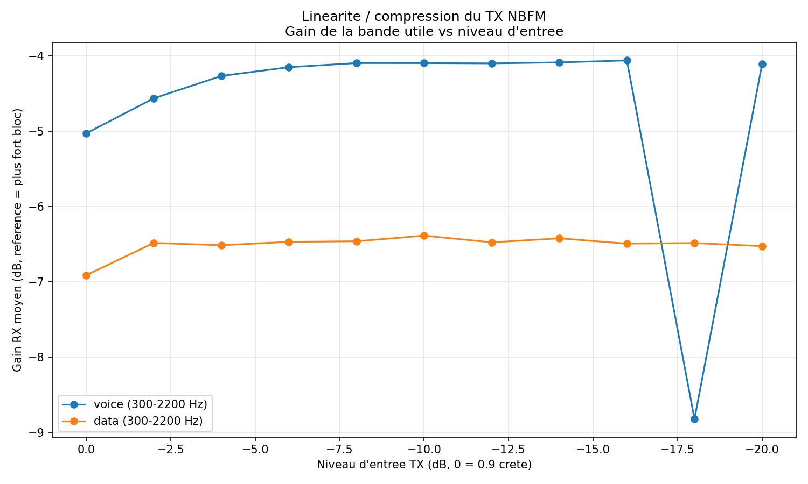
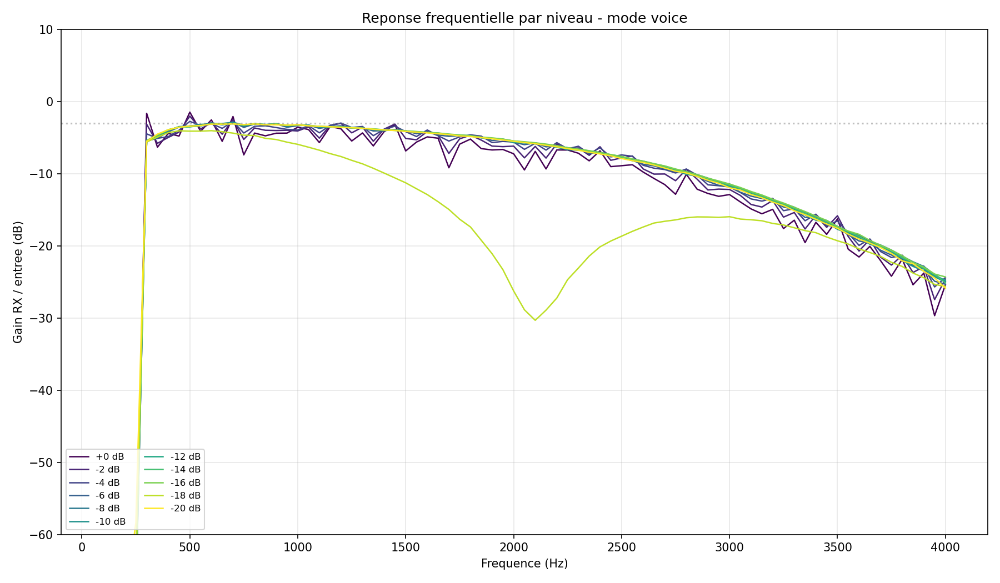
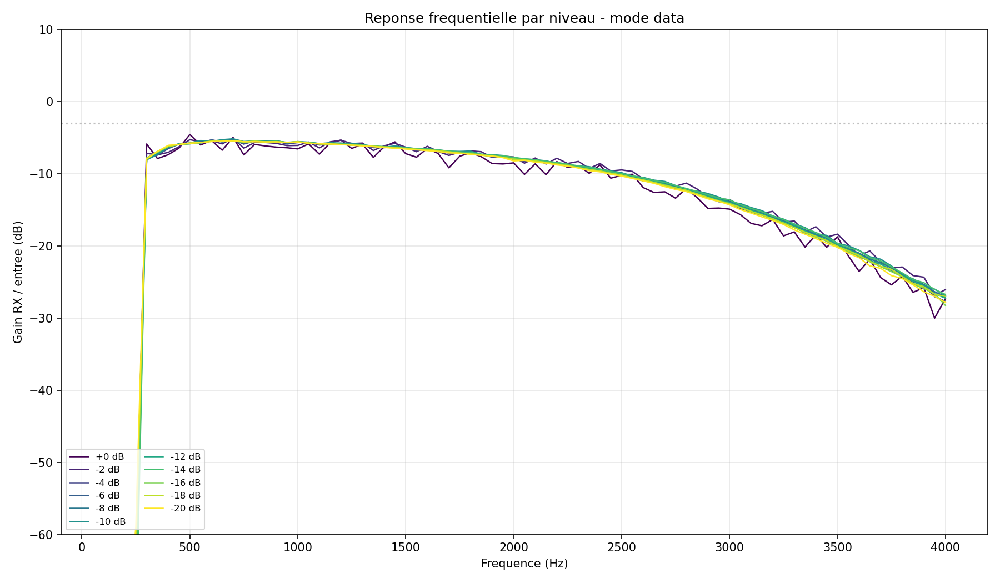
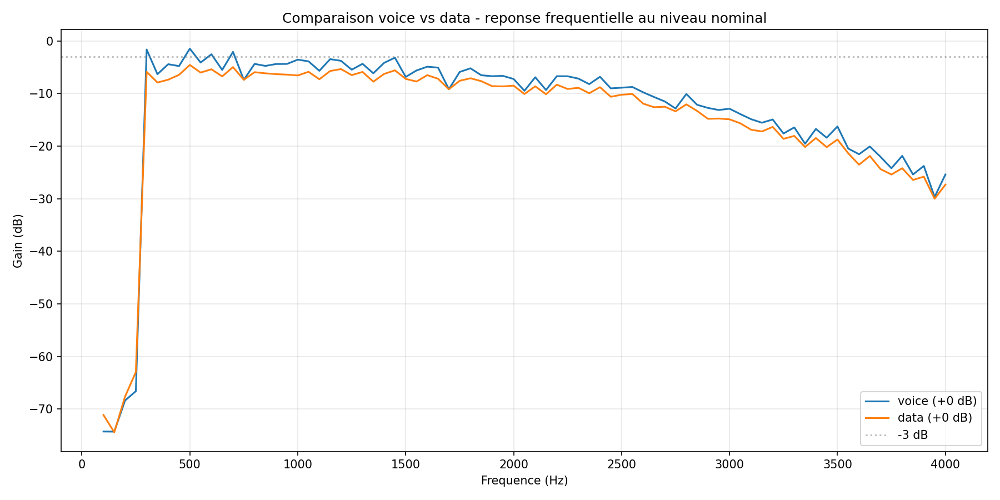
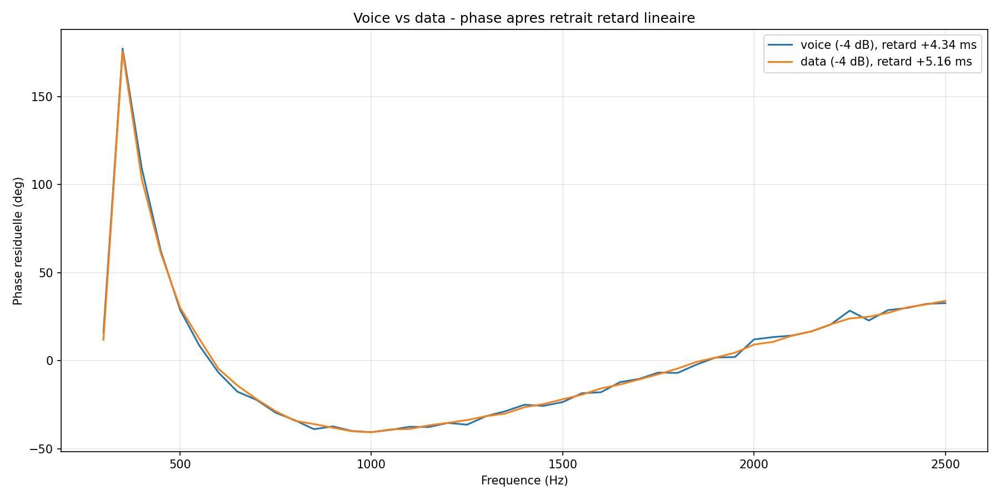
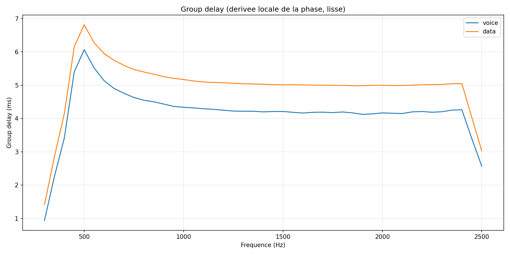
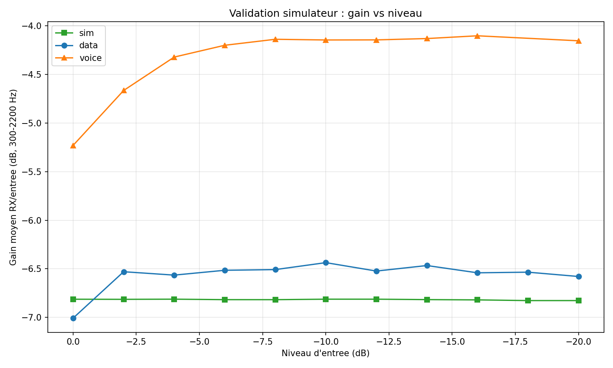
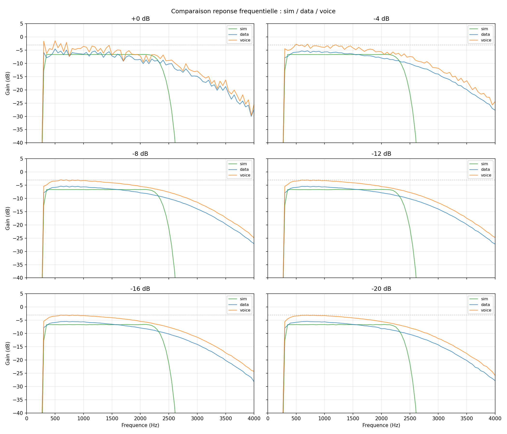
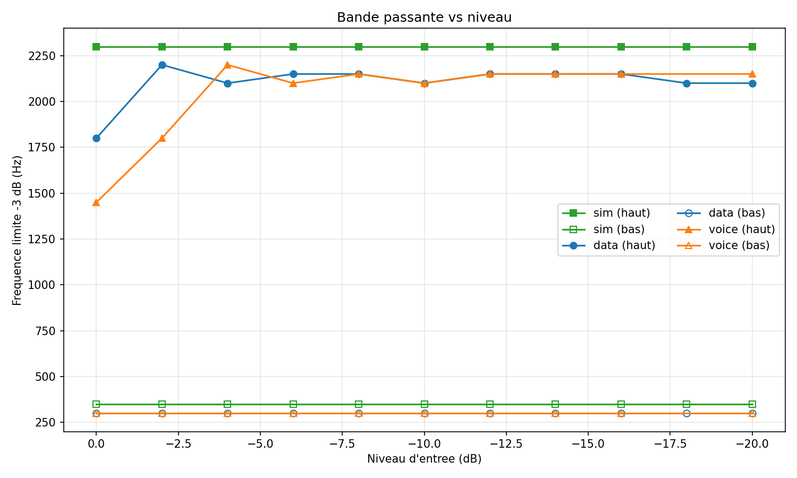

Caracterisation du canal NBFM — modes voice et data
Projet : modem audio pour transmission d'images sur canal radio amateur NBFM.
Date : 2026-04-14.
Protocole : WAV multitone de 79 tones (100-4000 Hz, espacement 50 Hz, phases aleatoires seed 42), balayage de niveau en 11 paliers de 0 dB (crete 0.9) a -20 dB par pas de 2 dB. Sortie TX rebouclee en RX, enregistrement 48 kHz mono 16-bit. Deux sessions : TX en mode voice, TX en mode data.
Conclusion principale : utiliser le mode data pour le modem.
La reponse en amplitude est parfaitement lineaire de 0 a -20 dB et la phase est stable.
Le mode voice presente une compression audio (~1 dB) et un ecrasement de la bande
haute a niveau nominal, inutilisable pour un modem.
1. Bande passante et reponse en amplitude
1.1 Gain moyen (300-2200 Hz) vs niveau d'entree

Gain moyen de la bande utile en fonction du niveau d'entree TX.
Data : plat a -6.5 dB sur toute la plage. Voice : compression ~1 dB aux niveaux
eleves, artefact a -18 dB.
| Niveau TX | Gain voice (dB) | BW -3dB voice |
Gain data (dB) | BW -3dB data |
|---|
| 0 dB | -5.2 | 300-1450 Hz | -7.0 | 300-1800 Hz |
| -2 dB | -4.7 | 300-1800 Hz | -6.5 | 300-2200 Hz |
| -4 dB | -4.3 | 300-2200 Hz | -6.6 | 300-2100 Hz |
| -6 dB | -4.2 | 300-2100 Hz | -6.5 | 300-2150 Hz |
| -8 dB | -4.1 | 300-2150 Hz | -6.5 | 300-2150 Hz |
| -10 dB | -4.2 | 300-2100 Hz | -6.4 | 300-2100 Hz |
| -12 dB | -4.1 | 300-2150 Hz | -6.5 | 300-2150 Hz |
| -14 dB | -4.1 | 300-2150 Hz | -6.5 | 300-2150 Hz |
| -16 dB | -4.1 | 300-2150 Hz | -6.5 | 300-2150 Hz |
| -18 dB | -11.5 | 300-1100 Hz | -6.5 | 300-2100 Hz |
| -20 dB | -4.2 | 300-2150 Hz | -6.6 | 300-2100 Hz |
1.2 Reponse frequentielle par niveau — mode voice

Chaque courbe represente un niveau d'entree. A 0 dB (violet) la
bande haute est ecrasee par le limiteur audio qui genere des IMD.
1.3 Reponse frequentielle par niveau — mode data

Courbes superposees sur toute la plage : reponse independante
du niveau, comportement lineaire attendu d'un modem numerique.
1.4 Comparaison voice vs data au niveau nominal

A 0 dB : la difference principale est en haut de bande
(1500-2500 Hz) ou le mode voice s'effondre a cause du limiteur.
Coupure basse a 300 Hz commune (filtre sub-audio CTCSS du transceiver).
2. Reponse en phase
2.1 Phase residuelle par niveau (retard lineaire retire)

Forme de la phase apres fit lineaire (suppression du retard
de transmission). Les courbes se superposent quasi-parfaitement entre niveaux
et entre modes : la non-linearite de phase est une propriete
du canal, independante du niveau et du mode de modulation.
2.2 Comparaison voice vs data (phase)

Phase residuelle a -4 dB : meme signature pour les deux modes.
Le limiteur voice agit sur l'amplitude mais n'introduit pas de distorsion de phase.
2.3 Group delay

Group delay local (derivee lissee de la phase) : variation
d'environ 1 ms entre 300 et 2500 Hz, typique d'un cascade de filtres
HPF sub-audio + LPF audio + pre/de-emphase.
Ecart-type du residu de phase sur la bande : ~40° en voice
comme en data, sur tous les niveaux sauf -18 dB voice (89°, artefact).
3. Anomalies
Bloc -18 dB en mode voice : gain moyen -11.5 dB (vs -4.1 dB attendu),
bande retrecie a 1100 Hz et ecart-type de phase double (89° vs 40°).
Probable artefact ponctuel a l'enregistrement (squelch qui coupe, interference,
ou decoupage temporel). A refaire si cette mesure a de l'importance.
Derive apparente du group delay avec le niveau en mode data
(-0.04 ms/dB, monotone) : artefact d'horloge soundcard. Les blocs sont
enregistres sequentiellement, le drift entre horloge playback et capture
s'accumule. Ce n'est pas un effet du canal.
4. Implications pour le modem
- Mode a utiliser : data. Compresseur/limiteur audio desactive,
reponse lineaire sur 20 dB de plage dynamique.
- Bande utile reelle : 300-2200 Hz (a -3 dB). Bien plus etroite
que la bande theorique de
analog.nbfm_rx (100-2600 Hz) : le
transceiver reel ajoute un HPF sub-audio a 300 Hz (anti-CTCSS) et un rolloff
haut plus doux.
- Non-linearite de phase ~50° / 1 ms dans la bande. Impose
un egaliseur (FIR court ou adaptatif) et/ou une sequence de training pour
modulation coherente (PSK/QAM). Pas ideal mais exploitable.
- Canal quasi-stationnaire en amplitude et en phase : les
parametres d'egalisation peuvent etre fixes, pas besoin d'adaptation temps-reel
rapide.
- SNR à revoir : la mesure precedente donnait SNR ~0 dB
(comparaison crete-par-tone vs RMS large bande). Une mesure per-bin plus juste
reste a faire pour dimensionner le debit.
5. Simulateur GNU Radio et validation
Simulateur base sur les blocs analog.nbfm_tx et
analog.nbfm_rx de GNU Radio, avec injection de bruit gaussien
complexe a l'IF (entre pre-emphase/modulation et demodulation/de-emphase).
audio_in -> HPF 300 Hz -> nbfm_tx -> + bruit IF (gr_complex) -> nbfm_rx
-> LPF 2400 Hz -> gain -6.5 dB -> audio_out
Parametres calibres :
- Audio : 48 kHz, IF : 480 kHz, deviation FM ±5 kHz, tau 75 us
- HPF sub-audio 300 Hz (emule filtre CTCSS du transceiver)
- LPF post-demod 2400 Hz (emule filtre audio du RX)
- Gain audio -6.5 dB (calibration chaine acquisition reelle)
- Bruit IF : amplitude 0.165 complexe → plancher audio 0.00114 RMS
(cible 0.00113 mesuree en gap data)
- Derive d'horloge soundcard : -16 ppm statique (mesure reelle), avec
option de variation thermique sinusoidale (
--thermal-ppm,
--thermal-period) pour emuler les drifts de plusieurs ppm
observes sur certains TX au reechauffement
Validation de la derive d'horloge (group delay par niveau,
sur 55 s) :
| Niveau | Sim GD (ms) | Data GD (ms) |
|---|
| 0 dB (debut) | 4.951 | 5.389 |
| -20 dB (fin) | 4.071 | 4.514 |
| ΔGD sur 55 s | -0.88 ms | -0.88 ms |
| Derive estimee | -16 ppm | -16 ppm |
Validation contre les enregistrements reels (bloc -18 dB voice exclu) :

Gain moyen (300-2200 Hz) vs niveau : simulateur (vert) et
mode data (bleu) pratiquement superposes. Mode voice (orange) decroche a
niveau fort a cause du compresseur.

Reponse frequentielle par niveau : sim (vert), data (bleu),
voice (orange). La simulation suit la mesure data a < 1.5 dB pres sur toute
la bande utile, pour tous les niveaux.

Bande passante a -3 dB : sim stable a 300-2300 Hz,
data stable a 300-2150 Hz. L'ecart de 150 Hz en haut vient du filtre audio du
transceiver specifique utilise ; le simulateur est plus representatif d'un
canal NBFM generique.
Metriques de validation :
- Plancher de bruit : sim 0.00114, data 0.00113 — match < 1 %
- Gain : ecart constant < 0.5 dB sur tous les niveaux (offset residuel de
calibration)
- RMS d'ecart sim vs data sur la bande 300-2200 Hz :
1.2 dB moyen (11 niveaux)
- Linearite : sim parfaitement lineaire comme data (±0.02 dB entre niveaux)
- Mode voice (avec compresseur) non modelise : pour l'etudier,
ajouter un compresseur/limiteur audio en amont du TX
Utilisation du simulateur :
python study/nbfm_channel_sim.py input.wav output.wav \
--if-noise 0.165 --drift-ppm -16 \
--thermal-ppm 5 --thermal-period 180
--if-noise : amplitude du bruit IF (0.165 = canal nominal mesure)--drift-ppm : derive d'horloge statique (ppm, signe indique le sens)--thermal-ppm : amplitude crete de la variation thermique
sinusoidale (0 pour derive constante)--thermal-period : periode de la variation thermique (s),
typiquement 60-300 s pour un TX qui chauffe
Pour les relais instables, il est courant d'observer 50-200 ppm de derive
statique et plusieurs ppm de variation thermique au cours d'une longue
transmission.
Annexes
Scripts :
study/generate_level_sweep_wav.py,
study/analyse_level_sweep.py,
study/analyse_phase.py,
study/nbfm_channel_sim.py,
study/validate_simulator.py.
Donnees sources :
results/result_voice_nbfm_level_sweep.wav,
results/result_data_nbfm_level_sweep.wav.
Parametres TX : results/nbfm_level_sweep_params.json.